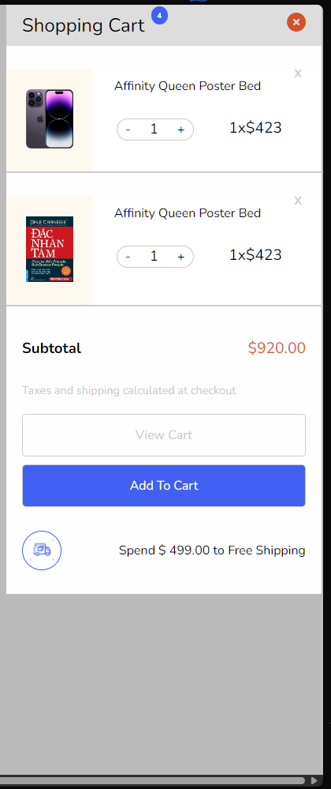
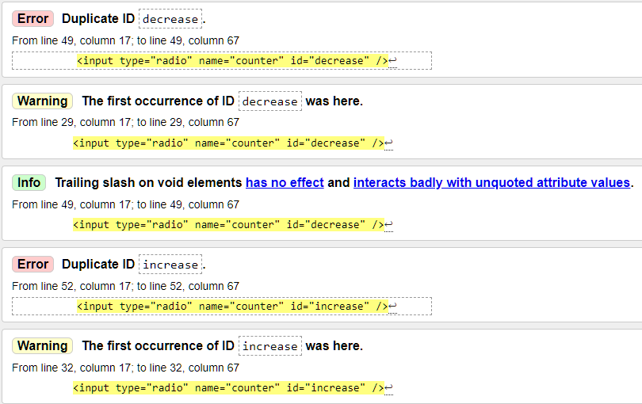

[x] Bài 1
Bài làm tốt *
Ở giao diện mẫu, padding vào trong của mega menu lớn hơn.
Ở giao diện mẫu mọi list-item đều căn trái chứ không phải căn giữa.
Vị trí các list-item không đúng với giao diện mẫu.
Vì phần menu navbar và mega menu là một phần điều hướng nên nên đặt chung trong một thẻ nav.
Không nên sử dụng font-weight 700 ở * vì nó sẽ làm cho font bị mất chất, mỗi lần muốn sử dụng thì phải đưa về font-weight mong muốn.
HTML5 bổ xung thêm một số thẻ bao bọc semantics như header.... Nên sử dụng chúng để tăng khả năng đọc hiểu source code.
Phần div.logo-img sử dụng max-width nhưng thẻ img không có width 100% nên không có tác dụng.
Không nên đặt tên class như menu-item-1, menu-item-2... vì nó không nói lên được nội dung của nó, và khi cần thêm một menu-item mới thì phải sửa lại tên class.
- Như trường hợp này là một ví dụ:
.menu-item-1 li:nth-child(4),
.menu-item-4 li:nth-child(1),
.menu-item-5 li:nth-child(1),
.menu-item-5 li:nth-child(5),
.menu-item-5 li:nth-child(4),
.menu-item-2 li:nth-child(1),
.menu-item-2 li:nth-child(3),
.menu-item-2 li:nth-child(4),
.menu-item-2 li:nth-child(5),
.menu-item-2 li:nth-child(8) {
opacity: 0;
}
- Nên đặt tên class như sau:
.menu-item li {
opacity: 0;
}
- Hơn nữa khi muốn tạo một khoảng trống, không nên cho content vào rồi để opacity: 0 mà nên sử dụng
marginhoặcpaddingđể tạo khoảng trống.
Nên bổ dung hiệu ứng highlight màu cho menu-nav khi hover vào mega menu con của nó.
Thiếu background nền.
[x] Bài 2
Bài làm tốt *
Ở HTML5 có thêm các thẻ bao bọc semantics như header, footer, main, section... nên nên sử dụng chúng để tăng khả năng đọc hiểu source code.
Đang có một chút lỗi về giao diện khiến hiện thanh scroll ngang:

Không nên sử dụng padding: 10px 0 để căn giữa ảnh ở 1 div.logo-car vì nếu resize kích thước div thì có thể sẽ khiến bức ảnh không còn được căn giữa theo chiều dọc.

- Các dễ nhất để căn giữa một bức ảnh theo div cha theo chiều dọc là:
.logo-car {
display: flex;
justify-content: center;
align-items: center;
}
<!-- Hoặc -->
.logo-car {
position: relative;
}
.logo-car img {
position: absolute;
top: 50%;
left: 50%;
transform: translate(-50%, -50%);
}
<!-- Hoặc -->
.logo-car {
display: grid;
place-items: center;
}
ID trong 1 trang web chỉ nên sử dụng 1 lần, nên sử dụng class thay thế.

Phần mini cart nên sử dụng thẻ aside để bao bọc.
Tiêu đề của mini cart không phải là một heading, không nên sử dụng h2 mà nên sử dụng p hoặc span.
Tất cả các heading bên trong đều chỉ là đầu mục, không nên sử dụng heading mà nên sử dụng p hoặc span.
Hình ảnh của sản phẩm trong giỏ hàng cần một giá trị alt đủ ý nghĩa thích hợp thay vì để trống vì khi hình ảnh không hiển thị thì sẽ không có giá trị nào để thay thế.
Màu chữ ở các .title bị sai với giao diện mẫu.
Phần font-weight ở .foot-text span cân đậm hơn.
Phần hiển thị chữ ở .item-price span sai với giao diện mẫu.
Các màu chữ ở .counter sai với giao diện mẫu.
Phần .title-h2 h2 cần cho font chữ nhỏ hơn và font-weight đậm hơn.
Nếu là tiêu đề chính, nên sử dụng một class như .main-title thay vì class .title-h2.
Phần màu của đường kẻ tại .product::before cần cho nhạt hơn.
Nên chia rõ hơn các product nên gom nhóm vào một class là .products để có thể xử lý tốt hơn.
Các phần thông tin phụ như tổng tiền, lưu ý, các nút button nên bao bọc bằng một thẻ footer.
Ở bài rút gọn. Hầu hết các lỗi đều giống ở bài chính, chỉ trừ việc không bị hiện thanh scroll ngang.
Nên chú ý thêm vào thẻ meta title vì chúng rất quan trọng trong SEO và trải nghiệm người dùng.
[x] Bài 3
Bài làm rất tốt *
Font chữ ở các phần title đều sai, ở bản mẫu sử dụng một font chữ có chân nhọn.
Sai chính tả Read-Mode thành Read More.
Phần .content thiếu khoảng cách phía dưới.